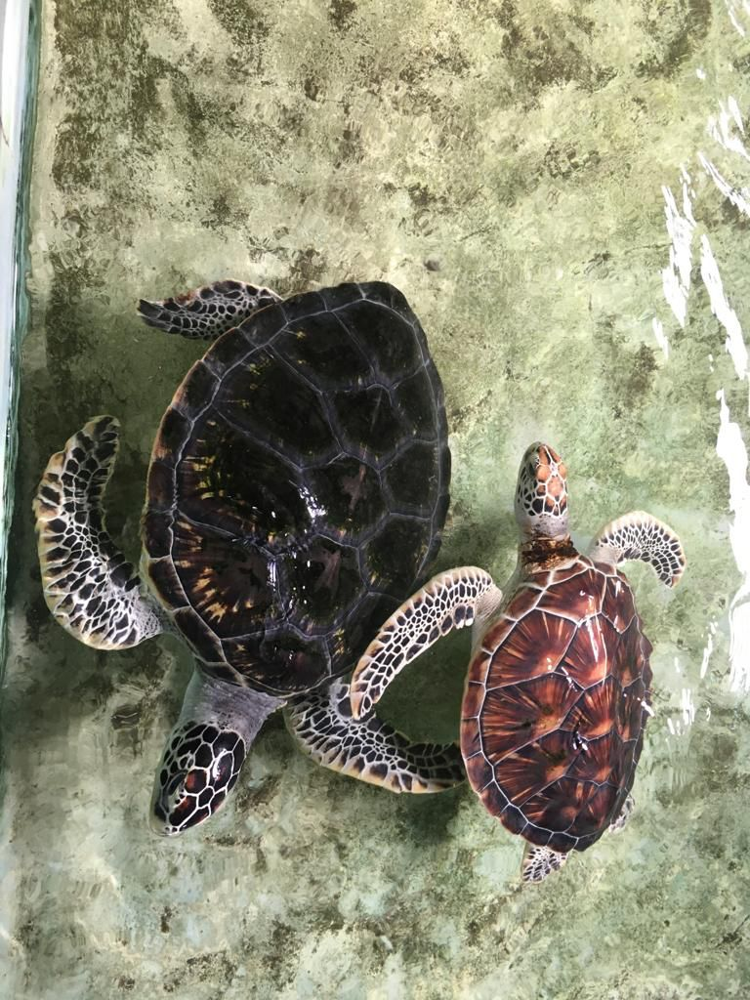
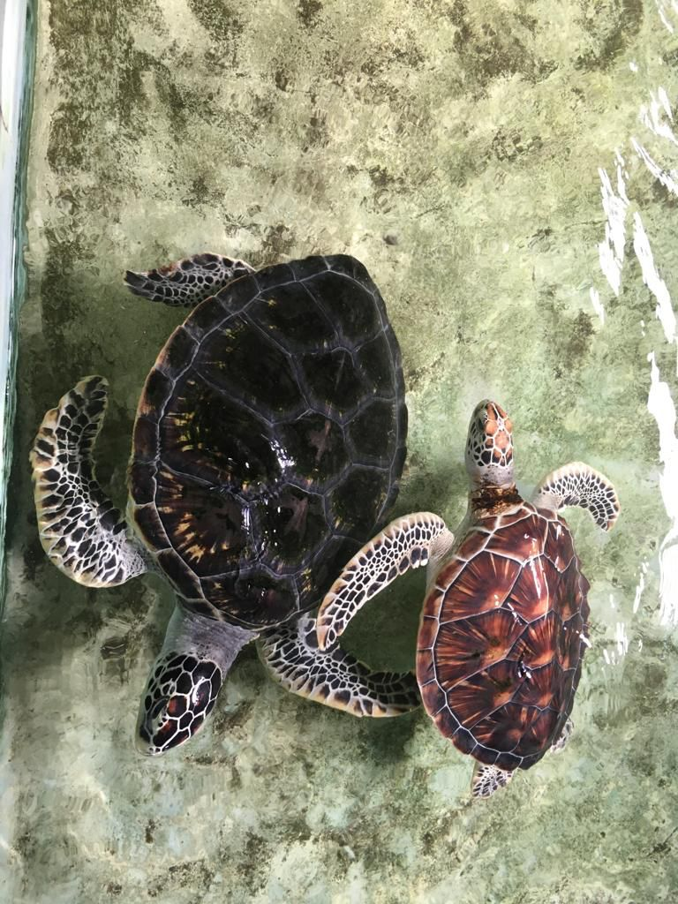
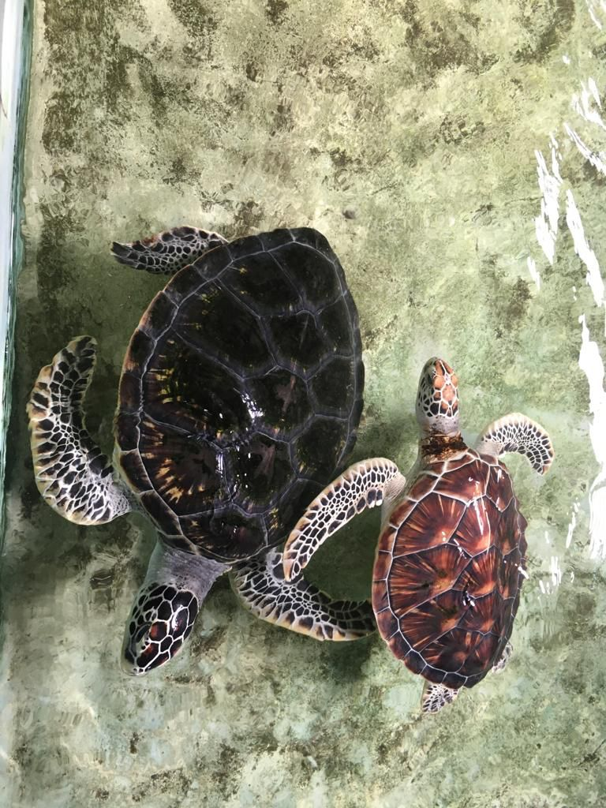

Some of the Turtle Hatcheries we visited


 

Schildkröte.lk is a commendable organization that is dedicated to preserving the turtle population in Sri Lanka. With our focus on education and awareness, our aim to inspire young minds to take an active role in conservation efforts. By initiating Schildkröte.lk, we have taken a crucial step in safeguarding the environment and preserving biodiversity. Our efforts are particularly important given the increasing threats faced by turtles due to habitat destruction, pollution, and poaching. Through our team's outreach programs, Schildkröte.lk is raising awareness about the importance of protecting these magnificent creatures and their habitats. We are also working to develop sustainable practices that can help mitigate the impacts of human activities on the turtle population. Overall, Schildkröte.lk is a shining example of how individuals can make a difference in protecting the environment and preserving the planet for future generations.
BSc. Computer Science (UG) | Photographer | Author
Rotaractor | AIESECer | Graphic Designer
Ahaz Fernando is a talented young computer science undergraduate, Rotaractor, author, and graphic designer who has made a significant impact in the conservation efforts of Sri Lanka. He designed the website for Schildkröte.lk, an organization dedicated to protecting the turtle population in Sri Lanka and educating young minds about turtles. Ahaz's design is visually stunning and easy to navigate, providing users with a wealth of information about the organization's mission and programs.
In addition to his design work, Ahaz is also an accomplished author, having written several books on various topics. He is an active member of the Rotaract Club of Kandy Metropolitan, where he has taken part in numerous community service projects aimed at making a positive difference in people's lives. Furthermore he serves as the Team Leader in Digital Attractions at AIESEC in APIIT
